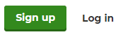
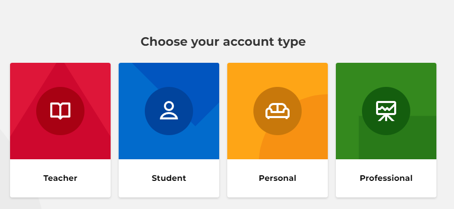
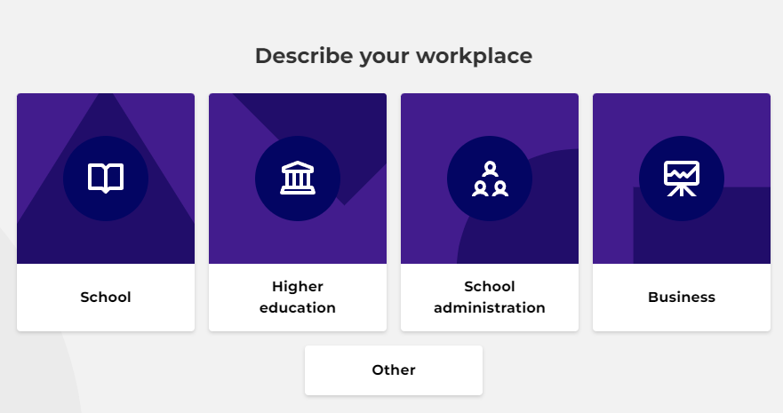
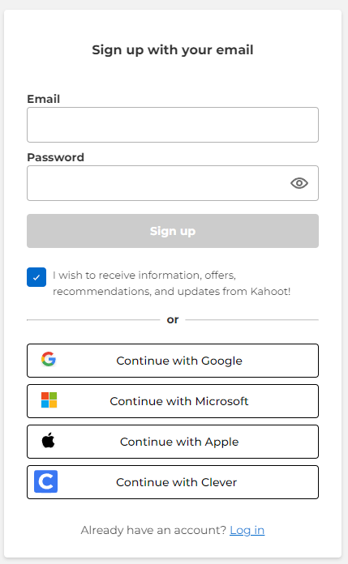

Hoe gebruik ik Kahoot? (account)
-

Account aanmaken stap 1
Als u de site opent zou u bovenaan deze knop moeten zien. Klik op Sign up als u nog geen account heeft. Als U alleen Log in ziet drukt u daar op en dan onderaan zou u Sign up moeten zien. -

Account aanmaken stap 2
Hier kan u de tool laten weten wat uw job is. U kan extra functies krijgen aan de hand van wat u hier kiest. -

Account aanmaken stap 3
Hier kiest u waar je werkt. -

Account aanmaken stap 4
Hier vult u uw email in. U maakt een wachtwoord aan. U kan ook inloggen via een externe site met de 4 knoppen eronder.